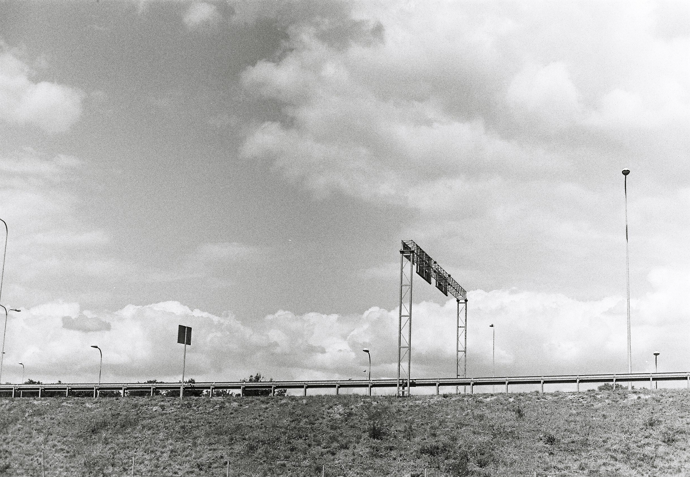

<!DOCTYPE html>
<html lang="en" dir="ltr">
  <head>
    <meta charset="utf-8">
    <title>About Jiyoung</title>
</html>
<head>
<body>
<h1><a href="1.html">STOP ZERO</a></h1>
</body>
</head>
<body>
  <ol>
 <li><a href="index.html" target="blank">Index</a></li>
 <li><a href="2.html">Inroduction</a></li>
 <li><a href="3.html">Portfolio</a></li>
</ol>
<h2>Introduction</h2>


<h1>생각의 조각들</h1>
<p>1 디자이너란 무엇일까? 쉽게 정의할 수는 없겠지만, 가장 가까운 말로 ‘설계자’ 아닐까?
<br>2 디자이너는 무엇이든 쉽고 편리하게 만드는 사람일까? ‘목적에 맞게’ 만드는 사람이라고 생각한다.
<br>3 말은 언제나 대화여야한다. 타인과의 대화, 나와의 대화.
<br>4 의미는 맥락이라는 도넛 모양의 수로를 빙글빙글 맴돈다. 한 단어의 반대편에는 다른 단어가 있는데, 그것은 흘러가다가 때로는 만난다.
<br>5 말의 경계는 그라데이션과 같다.
<br>6 네 손이 하는 실뜨기는 두 사람의 대화다.
<br>7 실뜨기에서 손과 손을 매개하는 실은 대화에서의 ‘말’과 같다.
<br>8 몸은 몸과 만난다. 처음에는 부분적으로, 실(끈)을 통해, 그리고 나중에는 온 몸이, 온전히 만난다.
<br>9 몸 쓰기는 몸을 쓰기, 또는 몸으로 쓰기. 몸으로 글 쓰기, 몸으로 악보 쓰기. 몸을 써서 말하기.
<br>10 알 듯 말듯한 의미의 경계에 있는 몸의 대화. 의미는 한계너머 경계없는 몸으로 나아간다.
<br>11 기호의 의미체계에 포섭되지 않는 감각. 몸 언어.
</p>
</body>
